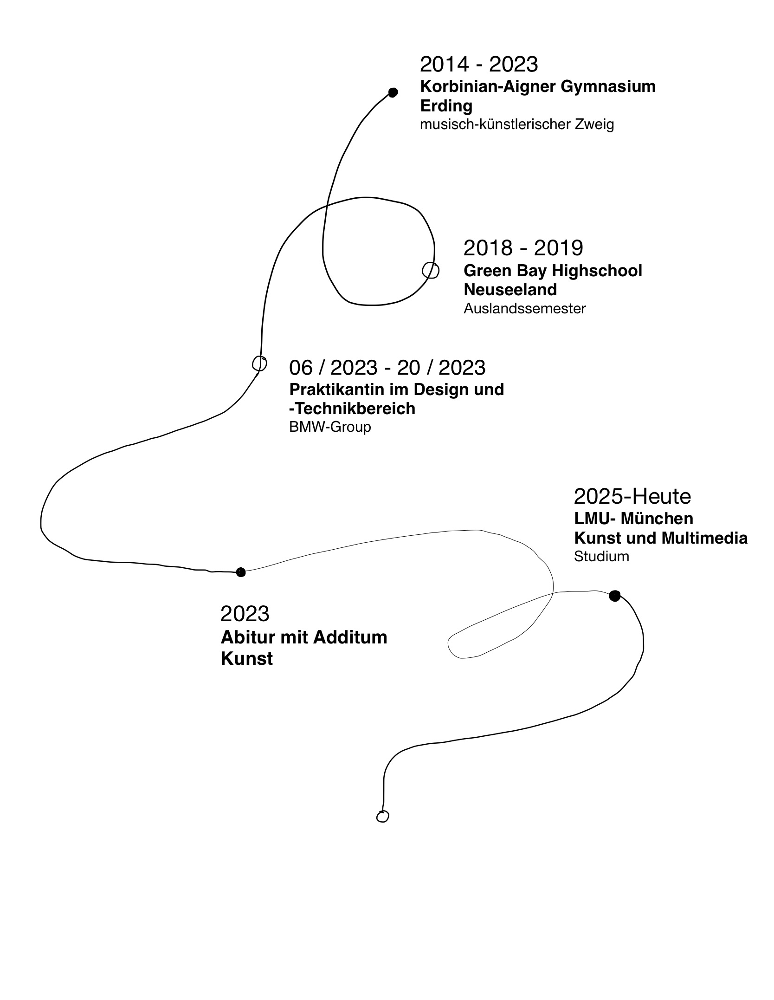
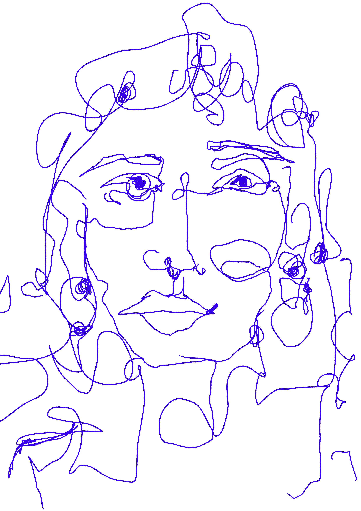

I am Amrei Neumaier, an Art & Multimedia student at LMU Munich. I am interested in photography, film, visual storytelling, design, music and all kinds of art.
I like exploring different ways of seeing, creating and connecting ideas through visual work.



- Photography
- Visual Storytelling
- Film & Video
- Web Design
- Creative Coding
- Graphic Design
- Animation
- Art Direction

- Creative Thinking
- Visual Thinking
- Communication
- Teamwork
- Curiosity
- Adaptability
- Independent Working

Adobe Photoshop
Adobe Illustrator
Adobe InDesign
Premiere Pro
After Effects
Figma
Procreate
Canva
Processing